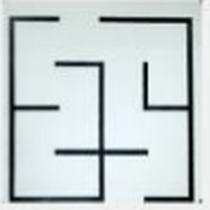
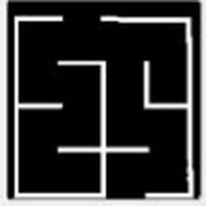
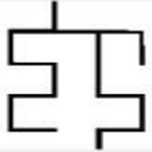
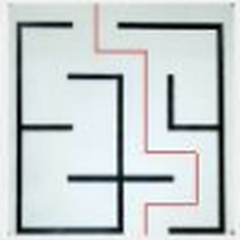

The perception-to-action gap
A camera captures a maze, but a robot cannot execute pixel coordinates. Image processing first identifies walls and the path; a coordinate transform must then connect the image to the robot's frame.
The project used thresholding and morphology for image processing, ArUco markers and homogeneous transforms for camera-to-base calibration, and a digital-twin stage for checking motion.
Building the pipeline
The planning sequence was photograph → segmentation → solve the maze → transform waypoints → validate kinematics → execute the robot trajectory. A* searched the route while inverse kinematics converted its target points into arm configurations.
Calibration and collision-aware checking were as important as path finding: an apparently correct image-space path can still place the end effector outside reachable workspace or in collision.




Evidence and scope
The earlier project write-up reports successful runs across 15 maze configurations. That describes the tested setup, not general performance across novel objects, lighting, camera angles or workspaces.
A useful next test would deliberately perturb camera placement, marker visibility and physical alignment to measure robustness rather than only task completion.
What this evidence supports
The 15-configuration result is drawn from the previous academic project description; no raw per-run evaluation files are linked here.
Sources and next steps
Details summarized from earlier project records; a separate public report is not available for this project.